STAX（スタックス）
コンデンサー型ヘッドフォンの老舗。1938年に「昭和光音工業」として林尚武氏が創業、1950年には「スタックス」ブランドのマイクロフォンを商品化、1963年に「スタックス工業�梶vへ社名変更した。コンデンサー型のトランスデューサー（変換器）を得意とし、ヘッドフォンの他にカートリッジ、ラウドスピーカーもコンデンサー型で発売していた。またカートリッジと組み合わせるアームや、ラウドスピーカードライブ用のパワーアンプ、さらにＣＤプレイヤーやDAコンバータ等も販売していた。しかしその経営は安定したものではなく、1980年代前半には本社を豊島区雑司ヶ谷から埼玉県入間郡三芳町に移しており、ついに1995年12月13日に休業を宣言し、破綻した。1996年（1月22日登記）にコンデンサー型ヘッドフォンに事業範囲をしぼり、現行の�泣Xタックスとなった。（＊）
ヘッドフォンに関しては1959年の第8回オーディオ・フェアに世界初のコンデンサー型ヘッドフォンSR-1を出品、翌1960年に発売した。それ以降自社のヘッドフォンを「イヤ・スピーカー」と呼び、今日までコンデンサー型の製品を作り続けている。現在では国内で安定して入手可能なコンデンサー型ヘッドフォンは同社の製品しかなく、コンデンサー型の音＝スタックスの音という状態になっている。
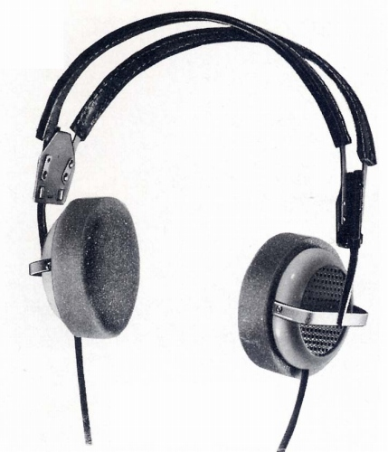
(SR-1のプロトタイプ）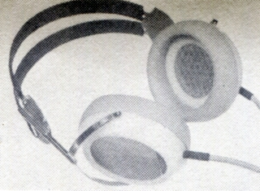
(イヤパッドなど各所が実機に近づいた別のプロトタイプ）
（＊）2011年12月9日、中国の音響機器メーカーにより、�泣Xタックスの買収が発表された。�泣Xタックスは旧製品についてもイヤパッドの供給など、手厚いサポートを行っていたメーカーであったが、今後、このブランドがどのようになっていくかは、現時点では不明である。
STAX（スタックス）の製品を以下のように分類する。（この分類は個人的な意見で、メーカーの分類ではありません）
なおSTAXの製品の中には、アダプターまたはドライバーとセット販売のみのものがあるが、それらについては各製品の「備考欄」でセットとしての価格等を記載する。
�T.ノーマルバイアスの製品
現行のバイアス電圧（580V）ではない製品群。バイアス電圧は200V（*）であり、1980年代までの他社の純コンデンサー型の多く（SONY、ELEGA、PIONEER、NAPOLEXなど）はこのクラスのバイアス電圧を持つ製品である。なお現行のプロバイアス製品が一般化した以降のアダプターまたはドライバーのノーマルバイアス電圧は230Vである。6本ピンのプラグを持つ。
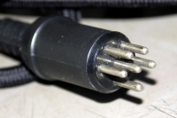
（６ピンのノーマルバイアス機用プラグ）* かつて「STAX Unofficial Page」の資料のページに収録されていたSR-1のカタログでは約150Vとなっていた。その他、管理人が目にしたカタログ・取扱説明書では200Vとなっている例が多い。スタックス社に確認したところ、絶縁の改善などによって徐々に電圧が上げられるようになったそうである。管理人が目にした範囲では1978年2月印刷らしきのSR-Σの資料では200V、1979年3月印刷らしきドライバーユニットSRM-1の、及び1979年7月印刷らしきドポータブルアダプターSRＤ-Ｘの資料では230Vとなっている。
なお「STAX Unofficial Page」は、管理人が知る限りで、STAX本社のサイトを含めて、同社の製品については、最も充実した情報が集められていたサイトであったが、2011年12月末頃に消滅したようだ。なお管理人が「STAX Unofficial Page」に提供していた資料は、その後入手したものと合わせ、ここで開示している。
�@SR-1系列モデル
初のイヤースピーカーSR-1とその直系の改良機。ドーナッツ状の耳覆い型のイヤパッドを持つ。SR-X系列の登場で同社のベーシック・モデルの位置づけとなった。1960年登場のSR-1は、最初のコンデンサー型ヘッドフォンであり、当初は製造歩留まりも低く、月産20台未満だったという。またイヤパッドも硬質な素材だった。1968年登場のSR-3は、振動膜や固定極、イヤパッドなどを改良した後継機種である。このモデルから一般的なソフトなイヤパッドになっている。New
SR-3は、SR-Xで開発した振動膜技術などをフィードバックしたもの。SR-5は、ベーシック・モデルとして、ヘッドバンドの簡略化などが見られる。SR-5Nは、2ミクロン膜厚のモデルらしい。
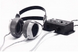
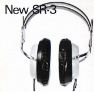
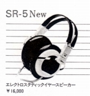
（左 SR-1 中央 NewSR-3 右 SR-5N）*SR-2について
STAXの製品には「SR-2」の型番を持つものが存在する。「STAX Unofficial Page」にも実機の映像があったが、この機種については現時点では詳細不明である。管理人の調べた範囲では1969年の「テープサウンド」誌の記事で、一度名前がでたのを見かけただけであるが、最近入手した資料によれば、1960年代にSR-1から発展した輸出専用モデルらしい。
＊SR-1について豊永尚輝 氏所有機の画像を使用しました。ありがとうございます。
�ASR-X系列モデル
SR-1、3から派生した解像度重視の上位モデル。振動膜や固定極の改良に加え、プレッシャー型と呼ぶ薄い耳のせ型のイヤパッドを持つ。耳とイヤパッドの間の容積を小さくすることによる特性の向上を目指していた。小判型ユニット使用のSR-Σ(シグマ)、Λ(ラムダ)登場まで、同社のトップモデルであった。1970年に登場したSR-Xから始まり、1972年に登場した3.8→2ミクロンと振動膜の薄膜化などを進めたSR-X/MK-2、1975年に登場したSR-X/MK-3では、一回り大きなユニットに変更された。
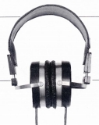
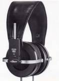
（左 SR-X 右 SR-X/MK-3）�BSR-Σ(シグマ)の系列モデル
頭内定位解消を目指したパノラミック・エンクロージュア型のモデル。コンデンサー型全般の欠点としてアタック感が弱い、力感が出せないという意見があるが、その意味ではユニットと耳の間の距離があり、スタックスの全製品中最もクセの強い機種。また耳とイヤパッドの間の容積を小さくするというSR-Xの路線とは真逆の方向でもある。なお現行モデルにつながる小判型ユニット及び鳥籠構造（ケージコンストラクション）を採用した最初の機種である。
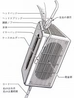
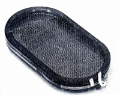
（発音部を耳の前方に配置する構造と小判型ユニット）
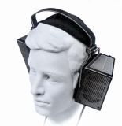
(SR-Σ）�CSR-Λ(ラムダ)の系列モデル
SR-Σ（頭内定位の改善）とSR-X（解像度）の要素を併せ持つセミパノラミック・エンクロージュア型。現行のスタックスの主要製品(SR-L700等）のオリジナルモデル。また後述のプロバイアスモデルの母体ともなった機種。小判型ユニット・鳥籠構造（ケージコンストラクション）を採用。
 (SR-Λ）
(SR-Λ）
�DSR-α(アルファ)の系列モデル
SR-X/MK-3あるいはSR-5Nと同じ2ミクロン厚膜のノーマルバイアス・ユニットをSR-α(アルファ)のフレームに納めた輸出用モデル。
（図-1 ノーマルバイアス機の系図）
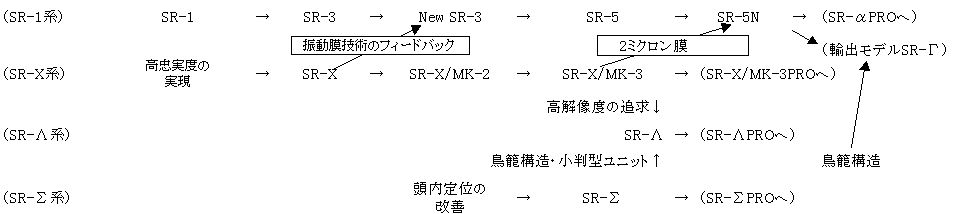
�U.エレクトレット・コンデンサー型の製品
バイアス電圧を供給しないエレクトレット・コンデンサー型の製品群。スタックスの中では入門機とされていた。SR-50と40（*）以外はすべてアダプター等とのセット販売商品。5本ピン（うち1本はダミー）のプラグを持つ。SR-30、40、50はSR-Xの流れを汲むプレッシャー型のイヤパッドの製品、SR-80、80PROはSR-Λの流れを汲む鳥籠構造（ケージコンストラクション）の製品である。なおSR-80はユニット背面の制動材（吸音材）がほとんどなく、今日の製品に近い構造の最初の機体かもしれない。またSR-40は、従来のキャブタイヤ型のコードから、現行の平行線タイプのコードを最初に採用した機種である。
なおエレクトレット・コンデンサー型専用のアダプターは、ノーマルバイアス、プロバイアスのイヤスピーカーでは使えないが、逆にエレクトレット・コンデンサー型のイヤスピーカーはノーマルバイアス、プロバイアスのアダプター、ドライバーのすべてのコンセントに接続可能。
* SR-40は原則としてセット販売（システム名 SR-44）された製品だが、1980年頃の広告には単体での価格が表示されている。
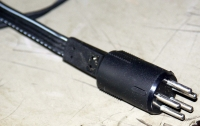
（5ピン構成だが4芯のエレクトレット型用プラグ）SR-30 SR-40 SR-50 SR-80 SR-80PRO
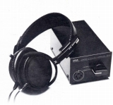
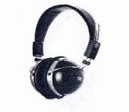
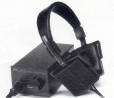
（左 SR-30 中央 SR-50 右 SR-80PRO）（図-2 エレクトレット型の系図）
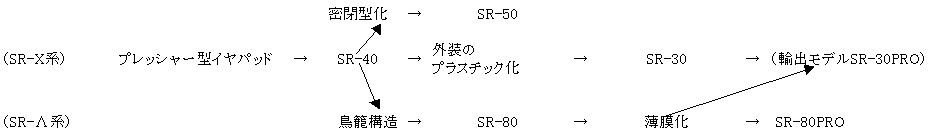
＊SR-50、SR-80について（「蒼乃雑記」蒼乃さんの所有機の画像を使用しました。ありがとうございます。
�V.プロバイアスの製品
自動車の騒音測定用に開発されたSR-ΛProfessinal以降の現行のバイアス電圧（580V）のモデル。バイアス電圧の上昇のほか、固定極間のギャップの拡張（600ミクロン→1,000ミクロン）、振動膜が薄膜化（*1）等の改良が行われた。1990年代以降の他社の純コンデンサー型（*2）はこのクラスに相当する。1982年頃に登場し、当初は限定生産品（*3）であったが、1985年頃に一般向けのカタログモデルとなった。5本ピンのプラグを持つ。
なお「プロバイアス」という呼び方は1980年代末に定着した名称で、当初は「ハイバイアス」や「高圧バイアス」と表現されていた。1987〜88年頃から次第に使われるようになった名称のようだ。
*1 従来バイアスの製品の振動膜はもっとも薄い物で2ミクロン、SR-ΛProfessinalは1.5ミクロンである。SR-ΣProfessinalとSR-ΛSignatureで1ミクロンの膜が使われたが、後期ロッドは1.5ミクロンに戻された。ただし限定販売品のSR-ΛProfessinalの初期型は2ミクロン膜だった（1984年の広告参照）。SR-Xmk3ProfessinalやSR-αProfessinalの開発に伴い1.5ミクロン膜に変更したとの広告もある。なおスタックス社に問い合わせたところ、膜厚の変更はあったが細かな記録は残っていないそうなので、たとえばシリアルNoで判別することはできないとのことである。
*2 SENNHEISERのHE90/HEV90は膜厚1ミクロン/バイアス電圧500Ｖ、HE60/HEV70は膜厚は不明でバイアス電圧は540Ｖ、KOSSのESP-950（日本では未発売）は膜厚1.5ミクロン/バイアス電圧600Ｖ。
*3 SR-ΛProfessinalは1984年3月製作の国内版カタログには記載されていない。1984年の広告では「限定発売」とされている。かつてSTAX Unofficial Pageに収録されていた資料では1985年10月製作のカタログから記載されていた記憶がある。ちなみにStereo Sound社の「BEST BUY」をノーマルのSR-Λが1985年度、SR-ΛProfessinalが1986年度に受賞している。
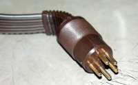
（5ピン6芯のPROバイアスモデルのプラグ）
�@SR-Xの系列モデル
SR-αProfessinalと同じプロバイアス/1.5ミクロン膜のユニットを採用したSR-Xシリーズの最終モデル。すでに主力がSR-Λ(ラムダ)系列に移っていた時代の製品であるせいか、生産数はあまり多く無いようで、現在ではあまり見かけない。
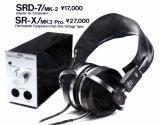
�ASR-Σ(シグマ)の系列モデル
ノーマルバイアス時代の主力製品の中では、一番最後にプロバイアス化したSR-Σの改良機。最初の1ミクロン膜採用モデル。後期型は1.5ミクロン膜である。

�BSR-Λ(ラムダ)の系列モデル
最初のプロバイアスモデルSR-Λprofessinalから今日の主力モデルに続くSTAXの製品群。SR-ΛSignatureでカプセルがユニット背面の制動材（吸音材）がほとんどない今日と同じ構造になり、LambdaNovaシリーズでヘットバンド（スタックスでの名称はヘッドスプリング）が改良された。なお振動膜や防湿膜などの膜厚で差異を設けていたのは、LambdaNovaシリーズまでであり、以降はイヤパッドやケーブルで差別化するようになったらしい。
SR-ΛProfessinal SR-ΛSignature SR-ΛSprit
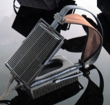
LambdaNovaBasic LambdaNovaClassic LambdaNovaSignature
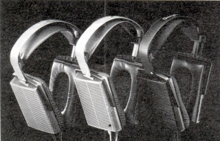
(Lambda Novaシリーズ）
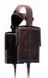
（SR-404）�CSR-α(アルファ)の系列モデル
SR-1から伝統の円形ユニットと、SR-Σ、Λのケージコンストラクション（鳥かご状の構造）を組み合わせた機種。解像度重視のSR-Xmk3Professinalと比べると、軽い装着感を持つ観賞用モデルであった。なおこの系統のモデルはSTAXの主要モデルの中で最初に（＊）イヤパッドの入手ができない機種となった。なおヘットパットは現行品で代用可能だが、固定のしかたがΛ(ラムダ)の系列と違う為、メーカーでの交換になるが、現在でも対応しているかは不明。
SR-αProfessinal SR-αProfessinalExcellent
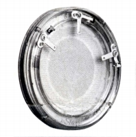
(円形ユニット）
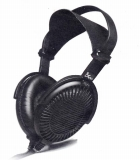
(SR-αProfessinal）SR-Γ（ガンマ） Professinal （資料：「蒼乃雑記」蒼乃さんの提供）
＊その後（2014/9月時点）ではSR-Σ(シグマ）系統のモデルのイヤ・パッドも在庫切れになったようだ。
�Dフラグシップモデル
従来のモデルをはるかに上回る大口径（ΩでΛシリーズなど小判型ユニットの約1.5倍の面積）の振動板と、高度な内容の固定極、金属製の筐体を持つトップモデル。SR-Ωは初代SR-X以来のメッシュの電極を持ち、また幅広低容量のコードを採用した最初の機種である。SR-007は金メッキしたグラスエポキシベースをNC処理で開孔した電極を採用し、ヘットバンドの改良と回転するハウジングで装着性の改善を行った。
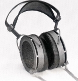
 （左 SR-Ω 右 SR-007）
（左 SR-Ω 右 SR-007）
（図-3 プロバイアス機の系図）
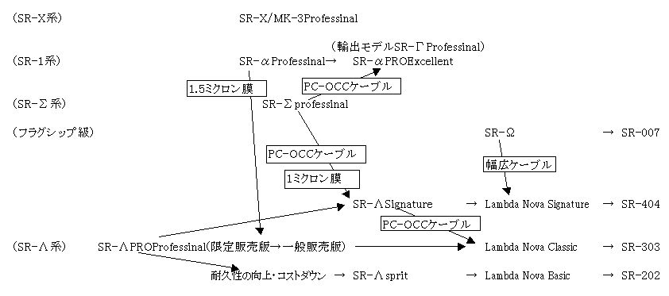
�W.ポータブル型の製品
イヤホンタイプのイヤースピーカー。SR-001及び
SR-001MK2はシステム商品だが、コネクターが特殊で他のアダプター・ドライバーに接続不能な為、一体のものとして考える。なおポータブル型でも580Vバイアス機であり、SR-001MK2のイヤスピーカー（S-001MK2）を通常の5ピンプラグにしたのがSR-003。
SR-001(S-001) SR-001MK2(S-001MK2) SR-003
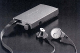
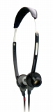
（左 SR-001 右 SR-003）（図-4 ポータブル型の系図）
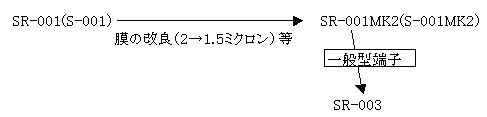
�X.その他
�Y.補足
�@アダプター・ドライバー等について
コンデンサー型ヘッドフォンは通常のヘッドフォンのようにアンプやCDプレーヤーのヘッドフォン端子に接続して使用することはできない（*1）。
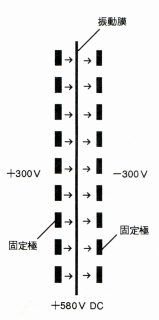
(STAXのプロ・バイアス機の動作原理、580Vのバイアス電圧を200V程度とするのがノーマル・バイアス機）固定極に300Vの高圧で音楽信号を供給する仕組みが必要であり、さらにエレクトレット型以外ではバイアス電圧をヘッドフォンに供給する必要がある。
コンデンサー型ヘッドフォンをドライブする仕組みは、「アダプター」、「ドライバーユニット」「ドライバーユニット内蔵プリアンプ」がある。他社の場合、コンデンサー型ヘッドフォンの機種が少なく、必然的にその機種または同一シリーズの付属品を使うことになるが、スタックスの場合、多彩な機器が存在する。
・アダプター
プリメイン又はパワーアンプのスピーカー用端子に接続するもの。音量調節はアンプ側のボリュウムで行う。1980年代初頭までの他社のコンデンサー型はすべてこのタイプに属する。
基本的にスピーカー用の大電流をトランス（*2）で高圧電流に変換するもの。スタックスの製品では「SRD」（*3）の型番が該当する。なおネットオークションではこのタイプも「アンプ」として出品される場合がある。スタックス以外の社外のものも何点か存在する。
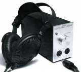
(SRD-7/Mk-2)・ドライバーユニット
CDプレーヤー等のラインレベルの信号を接続するもの。基本的に音量調節はドライバーユニット側で行う。1990年代以降の他社のプロバイアス級コンデンサー型はすべてこのタイプに属する。スタックス専用のヘッドフォンアンプと考えれば問題ない。スタックスの製品では「SRM」（*3）の型番が該当する。現行のスタックスの製品はすべてこのタイプ。
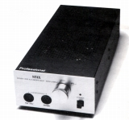
(SRM-1/MK2PRO)・ドライバーユニット付きアンプ
アナログディスクに対応するイコライザー回路や、その他の入力用のバッファーアンプ、レコーダー用の入出力端子等を備えたプリアンプにドライバーユニットの機能をプラスしたもの。当時のスタックス社のカタログ等では「インテグレーテッド・アンプ」、「プリメイン・アンプ」と表記されているが、通常のスピーカー及びヘッドフォンの接続は不可能。スタックスの製品では「SRA」の型番が該当する。
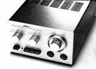
(SRA-12S)*1 他社のコンデンサー型でヘッドフォン端子に直接接続するものがあるが、実体は小型・高能率のトランスをヘッドフォン内部（プラグ部分や左右のカプセル内部等）に備えたものである。取り回しは良くなるが音質的には不利。詳しくはこちらを参照。
*2 パイオニアの製品にトランスではなく、トランジスターで変換するモデルが存在する。
なお余談であるがこのパイオニアのSE-1000のアダプターはデジタルアンプでは正常に機能しない可能性がある。管理人の経験ではフライングモールのCA-S3では正常に動作しなかった。安くアダプター部分だけオークションで落札できたので別個体も試したが、だめであった。もちろん通常のアンプに接続すると両個体とも正常に使える。ちなみにスタックス、テクニカ、コス、パイオニアのエレクトレット型（SE-100J）は正常に作動した。
*3 SRD-X及びSRD-X Professinonalについては、昇圧ステージでトランスを使用している為か、同社のカタログでは「アダプター」と呼ばれていますが、その性質上、このサイトではポータブル型のドライバーユニットとして考えている。
�A接続可能な組合せについて
各タイプのイヤスピーカーとアダプター・ドライバーの組合せは以下のようになる。
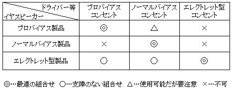
プロバイアスのイヤスピーカーをノーマルバイアスのコンセントに接続することは可能だが、プロバイアスのイヤスピーカーの振動膜のギャップ幅はプロバイアスの電圧を前提に設定されているので、個人的にはあまり使用しないしないほうがいいと思う。音量を無理に上げると破損する可能性があるとされている。
また注意が必要なのがエレクトレット型用のコンセントで、外観上はプロバイアス用コンセントと同じに見えるが、バイアス電圧の供給はないので使用不可。該当製品はSRD-4、SRD-4PRO及びSRM-Xsで、時折ネットオークションや中古店でイヤスピーカーなしの単体で出回ることがある。なぜスタックスが４本ピンが一般的なエレクトレット型でダミーピン１本を加えた5本ピンにしたのかは不明。